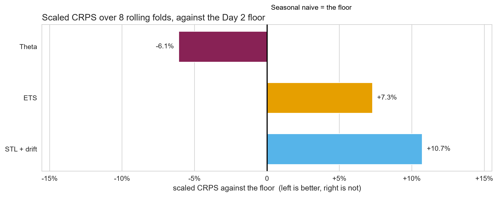

Orchestration & the Field
Day 3 · Lecture 2 · AutoGluon, and the map beyond the course
2026-09-06
Yesterday’s floor is still standing
- Part A: the fitting step, handed to a tool, and what it hands back
- Part B: a map of everything this course did not teach
This morning’s result
ETS matched the floor on MASE and lost on the distribution. The seasonal naive is still the best-calibrated model in the room.
A. Handing the fitting step over
AutoGluon TimeSeries, on the same spine
Two calls do the job you wrote by hand
This morning, four lines, one model you chose:
Today, two calls, a list of models:
Same job. The question of the afternoon: when the tool picks the model and scores it, what is still yours?
The conversion is two renames and a constructor
| this course | AutoGluon | |
|---|---|---|
| series id | unique_id |
item_id |
| timestamp | ds |
timestamp |
| value | y |
target, nameable |
| container | pd.DataFrame |
TimeSeriesDataFrame |
Most of the zoo is models you have already met
Three you built: two Day 2 benchmarks and this morning’s ETS. Two you have not: ARIMA and Theta, both on the map in fifteen minutes.
fit() runs a queue of models under one budget
- The zoo runs in turn, one model at a time
- Each gets a share of the remaining
time_limit - A
WeightedEnsembleis fitted on top, by default - The ranking rests on one internal validation split
The docs’ presets run from fast_training to best_quality. This lab pins the zoo instead, so every row that comes back is a model you can read.
The sign flip is printed in the log
AutoGluon will gauge predictive performance using evaluation metric: 'MASE'
This metric's sign has been flipped to adhere to being higher_is_better.
The metric score can be multiplied by -1 to get the metric value.
...
Training timeseries model ETS. Training for up to 116.0s of the 579.9s of remaining time.
-1.9661 = Validation score (-MASE)
...
Fitting 1 ensemble(s), in 1 layers.
Training ensemble model WeightedEnsemble.
Ensemble weights: {'Chronos2': 0.43, 'DirectTabular': 0.03, ...}
-0.8203 = Validation score (-MASE)The tool’s own quick start, its M4 hourly example. The numbers are not ours; the shape is.
The ensemble is not a black box: the log prints its weights, a plain weighted average of the members.
Its leaderboard is a shortlist, not a verdict
| model | score_val | score_test |
|---|---|---|
| WeightedEnsemble | -0.820 | -0.740 |
| Chronos2 | -0.878 | -0.765 |
| SeasonalNaive | -1.217 | -1.023 |
| ETS | -1.966 | -1.806 |
| Theta | -2.143 | -1.905 |
The tool’s own quick start, M4 hourly. Higher is better: every score is negated, so -1.97 is a MASE of 1.97.
score_val is one validation window. Day 2 spent an hour on why that cannot rank two models. The verdict comes from your harness.
What the framework buys, and what it does not
Buys
- Five models fitted, tuned and ensembled inside one call and a fixed budget
- The same code on 148 series, with no new loop
- A shortlist in two minutes
Does not buy
- An evaluation you can trust: one window, one sign
- A reason the winner beats your floor
- Any read on whether its bands are too wide
You have now seen every line this library runs. In industry you hand this step to a framework, and you still own the judgement.
B. The field, and where to go next
Listed, not taught · one line each
Four more classical families, by name
- Theta · simple, fast, strong. In AutoGluon’s zoo, and best on this series
- ARIMA · Ch 9. The other classical family, and where the structure Ljung-Box found on Day 2 actually lives
- Dynamic regression · Ch 7 and 10, for when you have price or promotions
- Hierarchical · Ch 11, when state totals must equal the national total
The harness is the part that transfers
- Lag-feature ML · LightGBM on lags and rolling stats; no fpppy chapter
- Global neural · DeepAR, Transformers. One model across many series
- Foundation models · Chronos, Moirai, TimeGPT. Pretrained, zero fitting
- Ensembles · combine forecasts; AutoGluon’s
WeightedEnsembleis one
Every one of these still gets scored by the harness you built. That is the part that transfers.
Choosing, in practice
One seriesbenchmarks, then ETS Many, relatedglobal ML or neural Drivers to usedynamic regression
Score them the same wayrolling folds, a proper score
The first move on any new series is still the benchmark floor.
One model beat the floor; two did not
Off this chart: naive 0.081, drift 0.090, mean 0.348. Those three were never in contention.
The floor held, and one thing beat it
The closing result
Theta wins on MASE and on scaled CRPS, in three lines and with no lecture. Nothing this course taught properly beat the seasonal naive on the distribution.
- A one-line benchmark survived a full day of fitted models
- Complexity did not order the results; honest uncertainty did
- You cannot know which is which without a harness
\(\rightarrow\) Lab G · Orchestration, and one of your own
Back to labs/03_day3_models_and_orchestration.ipynb
| 3.4 | The same job, handed to a framework | 20 min |
| 3.5 | Capstone: add a model of your own | 15 min |
35 minutes. 3.4 needs the install; start it before you read the cell.
3.5 is the course in four lines. Pick a model, cross-validate over the same eight folds, score it with the same harness, read it against the floor.
Lecture summary
- A framework brings its own frame, its own budget and its own sign. The judgement stays yours
- The map is a reading list. The harness is what transfers to every model on it
Three days, one series, one way of scoring. You can now take a model you have never met and say honestly whether it is better.